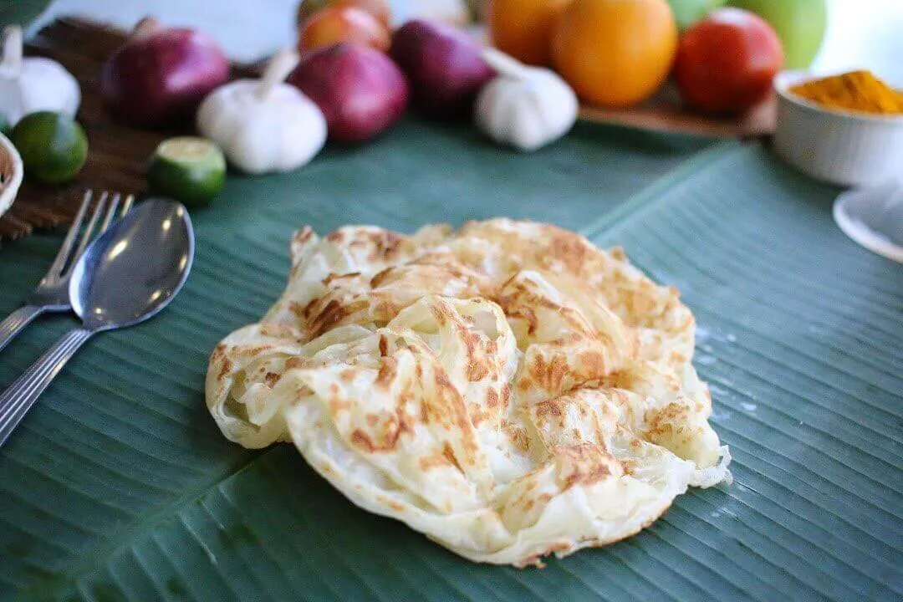
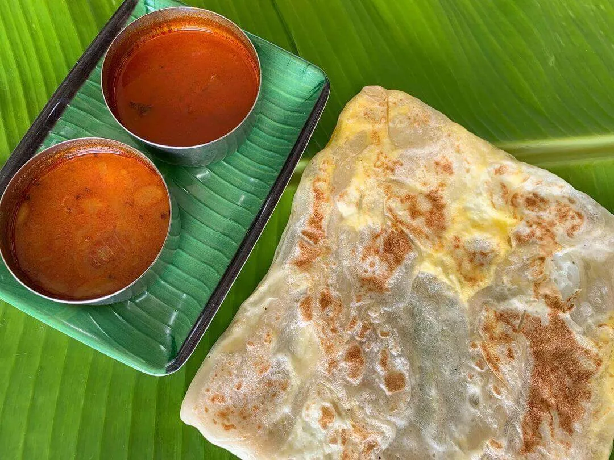
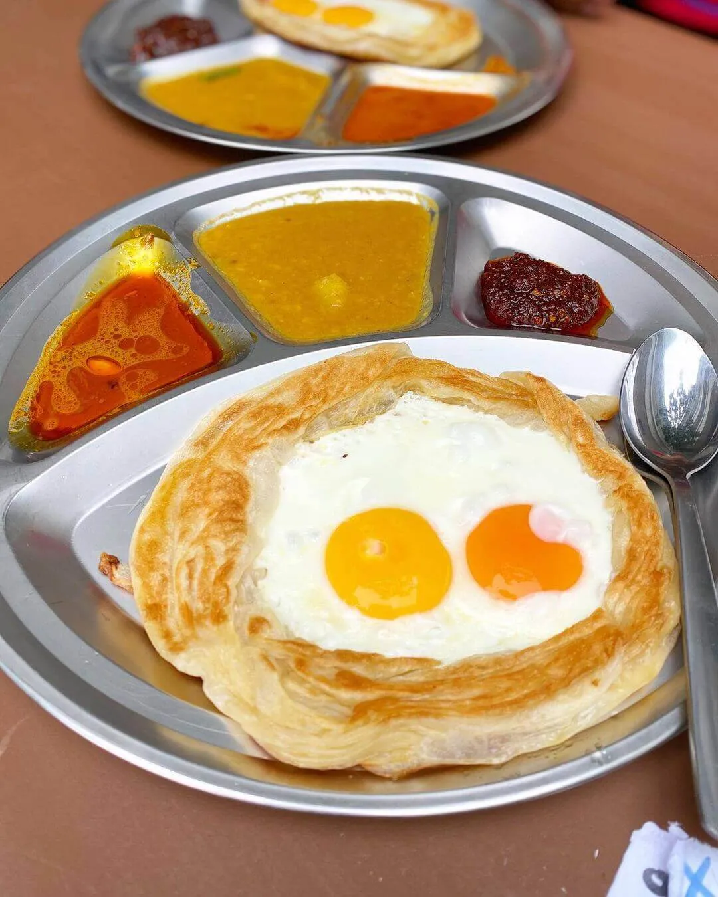

Roti Canai
This South Asian-inspired flatbread, cooked on a griddle and served with dal and curry, is part of the holy trinity of late night mamak food, along with fried Maggi and Indomie. From the simple to the unusual, from the savoury to the sweet, here’s a list of the many types of roti canai on offer.
Roti kosong
Roti kosong (empty roti) is plain roti canai, the go-to for a vast majority of mamak patrons. Made from flour, water and ghee or oil, the dough is repeatedly kneaded and folded before proofing to achieve its characteristic fluffiness.
Roti Telur
The next most commonly ordered type is roti telur (egg roti). An egg is cracked into the stretched out dough — making sure the yolk breaks — before it’s folded in to create a yellow-streaked flatbread with a protein boost. If you want two eggs, ask for roti jantan (male roti).
Roti sarang burung
Roti sarang burung (bird’s nest roti) is like an egg in a basket, except instead of cutting a hole in a slice of bread, you make a circular cordon with the dough and crack a couple of eggs into the centre. It can be topped with marinated or curried meat for a satisfying breakfast or supper.